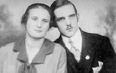
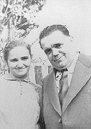
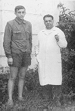
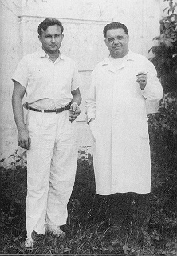
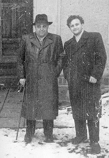
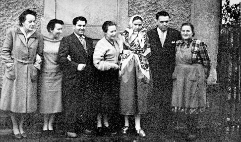
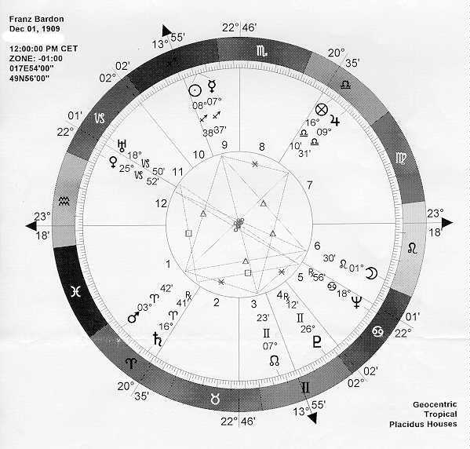

Franz Bardon and his wife Marie (~1930)

Franz Bardon and his daughter Marie (1950)

Franz Bardon and his son Lumir (1956)

Franz Bardon and his student Dr. M.K. (1956)

Franz Bardon and his student Dr. M.K. (1953)

From right to left:
Marie Bardon, Franz Bardon, daughter Marie Bardon, Maria Pravica.
On the left corner: Otti Votavova.
(1957)

Interpretations are welcomed!
(I would like to thank Mr. Paul M. for this contribution.)
See also: Interpretation
of the zodiacal standart wheels of Franz Bardon and Nostradamus, including
two more zodiacal standart wheels in color and their interpretation. Submitted
by Paul M.

This page hosted by  Get your own Free Home Page
Get your own Free Home Page